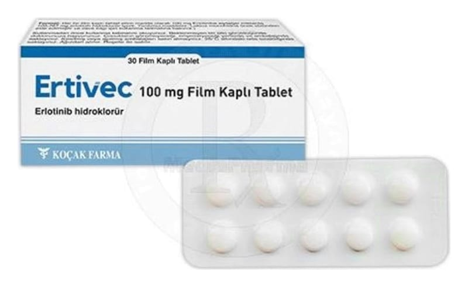

Ertivec 100 mg Film Kaplı Tablet, 30 ADET

Ne için kullanılır
KT · Bölüm 1• Bir film kaplı tablet 100 mg erlotinibe eşdeğer miktarda 109,267 mg erlotinib hidroklorür içerir. Beyaz renkli, yuvarlak, bikonveks film kaplı tabletler halindedir. 30 tablet içeren ambalajlarda, 10’ar tabletlik blisterler halinde bulunur. • Antineoplastik ilaçlar adı verilen, tümör hücresinin bölünmesini ve gelişmesini engelleyen ilaç grubunun bir üyesidir. • Erlotinib içeren ERTİVEC epidermal büyüme faktör reseptörü (EGFR) olarak adlandırılan proteinin aktivitesini engelleyerek kanseri tedavi etmek amacı ile kullanılan bir ilaçtır. Bu proteinin kanser hücrelerinin büyümesinde ve yayılmasında rol oynadığı bilinmektedir. • ERTİVEC, yetişkinlerin kullanımı içindir ve eğer kanser hücrenizde spesifik bir EGFR mutasyonunuz (bir tür genetik bozukluk) varsa ve metastatik evrede bulunan yassı hücreli olmayan, küçük hücreli olmayan akciğer kanseri hastası iseniz, ERTİVEC tedavinizin ilk ya da Bu ilacı kullanmaya başlamadan önce bu KULLANMA TALİMATINI dikkatlice okuyunuz, çünkü sizin için önemli bilgiler içermektedir.
• Bu kullanma talimatını saklayınız. Daha sonra tekrar okumaya ihtiyaç duyabilirsiniz. • Eğer ilave sorularınız olursa, lütfen doktorunuza veya eczacınıza danışınız. • Bu ilaç kişisel olarak sizin için reçete edilmiştir, başkalarına vermeyiniz. • Bu ilacın kullanımı sırasında, doktora veya hastaneye gittiğinizde doktorunuza bu ilacı kullandığınızı söyleyiniz. • Bu talimatta yazılanlara aynen uyunuz. İlaç hakkında size önerilen dozun dışında yüksek veya düşük doz kullanmayınız.
ikinci basamağı için size reçetelenebilir.